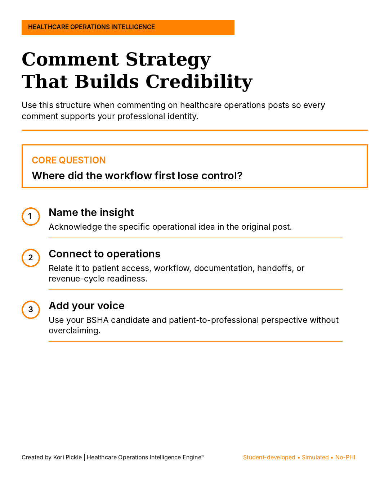

Patient Access Handoff & Closed-Loop Readiness System™
Uses the R4 model—Ready, Route, Receive, Resolve—to examine whether administrative handoffs have clear ownership, acceptance, escalation, and verified closure.

I am Kori Pickle, a BSHA Candidate at University of Phoenix building an honest healthcare operations foundation through coursework, lived patient experience, professional learning, and student-developed simulated projects.
I study where healthcare administrative workflows can lose control—where unclear ownership, missing documentation, weak handoffs, authorization delays, or incomplete follow-up can create patient confusion, staff rework, denial risk, and revenue-cycle pressure.
My goal is to earn an entry-level remote opportunity where careful documentation, systems thinking, patient awareness, and responsible technology use support stronger healthcare operations.

My portfolio turns coursework, lived patient insight, and independent learning into structured healthcare operations projects. Each project is designed to demonstrate how I organize a problem, identify the first loss of control, separate facts from assumptions, and recommend role-appropriate next steps.
Created by Kori Pickle, BSHA Candidate. Projects are educational, simulated, and do not use PHI, employer data, payer data, claims data, or real patient records.

A delayed task, confused patient, stalled authorization, or crowded queue may be where a breakdown becomes visible. It is not always where the breakdown began. This framework helps me trace an operational signal backward before proposing a solution.
Identify where the operational problem becomes noticeable.
Examine missing information, unclear ownership, handoffs, and readiness.
Recommend a role-appropriate control, follow-up, or escalation step.
Each project uses synthetic scenarios to practice healthcare operations reasoning without claiming access, authority, or employer results.
Uses the R4 model—Ready, Route, Receive, Resolve—to examine whether administrative handoffs have clear ownership, acceptance, escalation, and verified closure.
Organizes simulated authorization status, delay risk, denial reasons, appeal readiness, patient-access impact, and a 30-day improvement plan.
Maps how documentation gaps, eligibility issues, unclear requirements, and missed control points may create rework and denial exposure downstream.
Follows a simulated institutional claim from upstream readiness through X12 837 submission, payer adjudication, X12 835 remittance, payment posting, exception handling, and verified closure. The case identifies a balanced-dollar responsibility-mapping defect and designs controls that protect both the patient and revenue integrity.
Open branded case study →
I am building credibility honestly—one framework, project, and professional conversation at a time.
I am preparing for fully remote opportunities in healthcare operations support, patient access, prior authorization, revenue-cycle support, documentation workflow support, health informatics support, quality improvement, and implementation coordination.
My Healthcare Operations Intelligence Engine™ brand helps connect what I study, what I build, and how I communicate with healthcare professionals.

A structured content system keeps my LinkedIn learning aligned with the healthcare operations roles and skills I am genuinely developing.

My engagement approach is to name the insight, connect it to operations, and add my patient-to-professional perspective without overclaiming.
Bachelor of Science in Health Administration candidate with coursework connecting healthcare quality, information systems, research, legal issues, regulation, and compliance.
Actively seeking fully remote opportunities where precision, systems thinking, patient awareness, and operational intelligence can support meaningful outcomes.